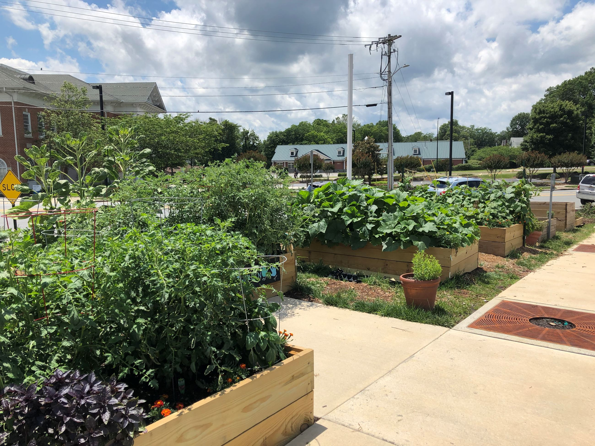

Class of 2023
The Early College at Guilford
3.9 GPA
June-July 2021- I helped maintain the community garden at the High Point Public Library by watering plants, clearing weeds and planting new plants
July 2021- I was a full-time volunteer that worked as a camp counselor at this two week summer nature camp for kids. I helped lead and teach young kids about various topics such as art, music, and nature. I have also attended several nature camps when I was younger
2019-Present- I am the head volunteer at a weekly language school where I teach kids about the Nepali language and culture
July 2020-I modified the circuit and deisgn of ride-on toy cars for physically challenged children so that they can use them comfortably and easily
I have participated in the North Carolina Economics Challenge for 3 years, where I study economics and participate in an online economics completion
I helped maintain a robot and was on the programming team where I help contribute code and learn to code for 3 years
I have been playing piano for 6 years and particpate in recitals twice a year
I can solve the Rubiks cube in around 30 seconds and have been solving for 3 years

I am fluent in Nepali